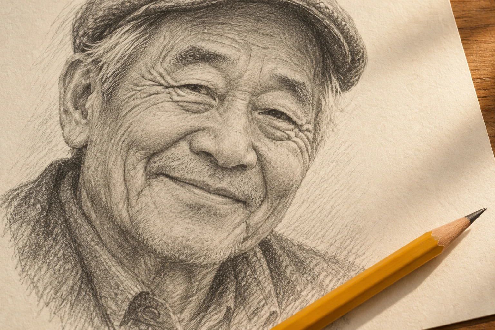
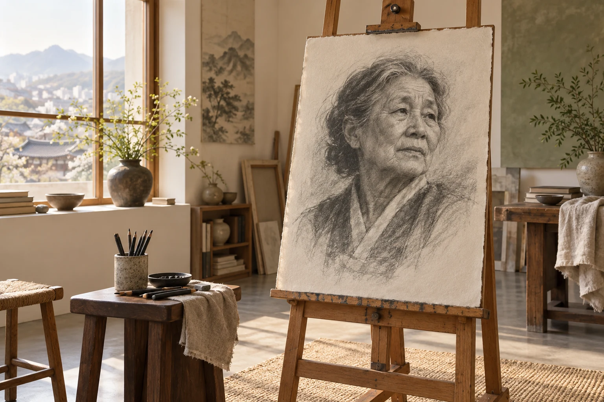
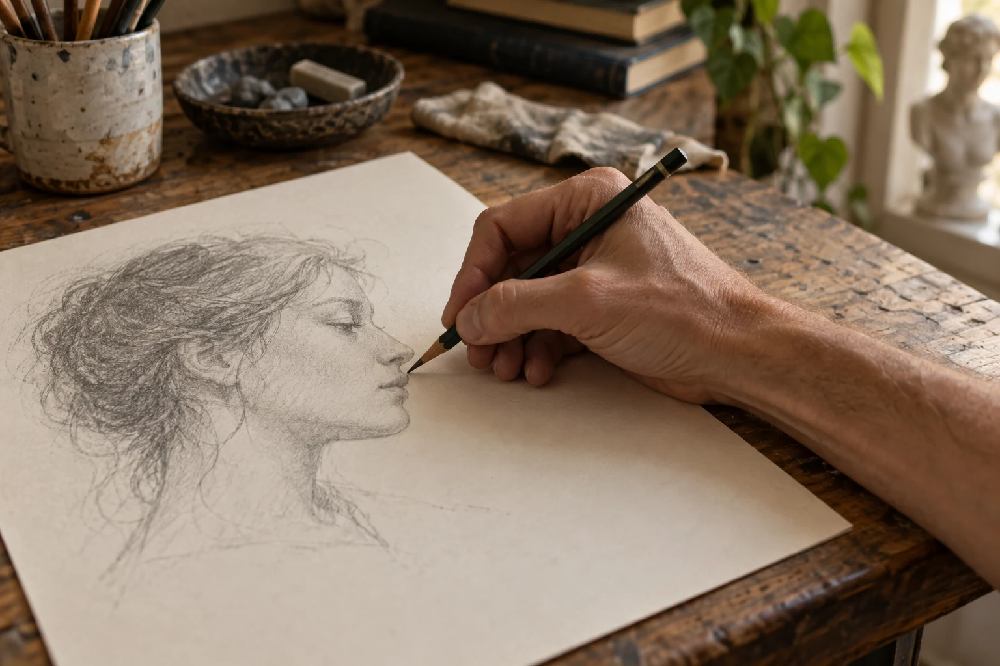
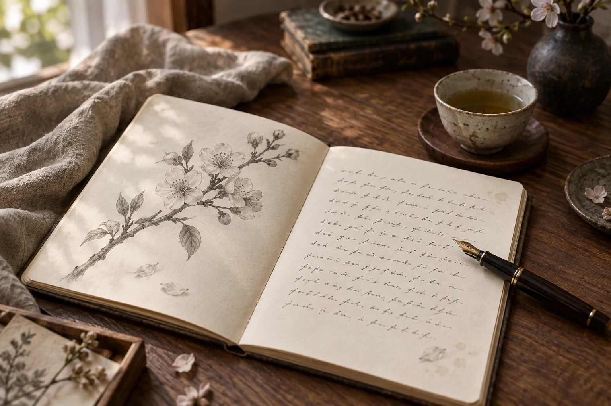
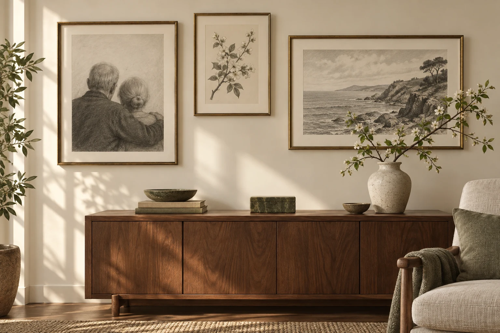
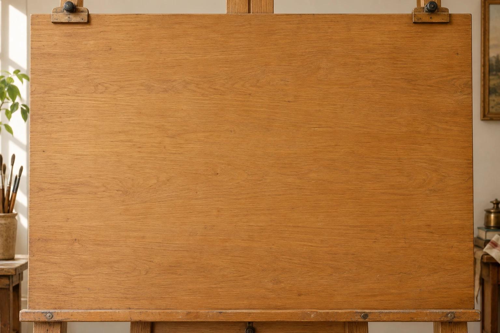
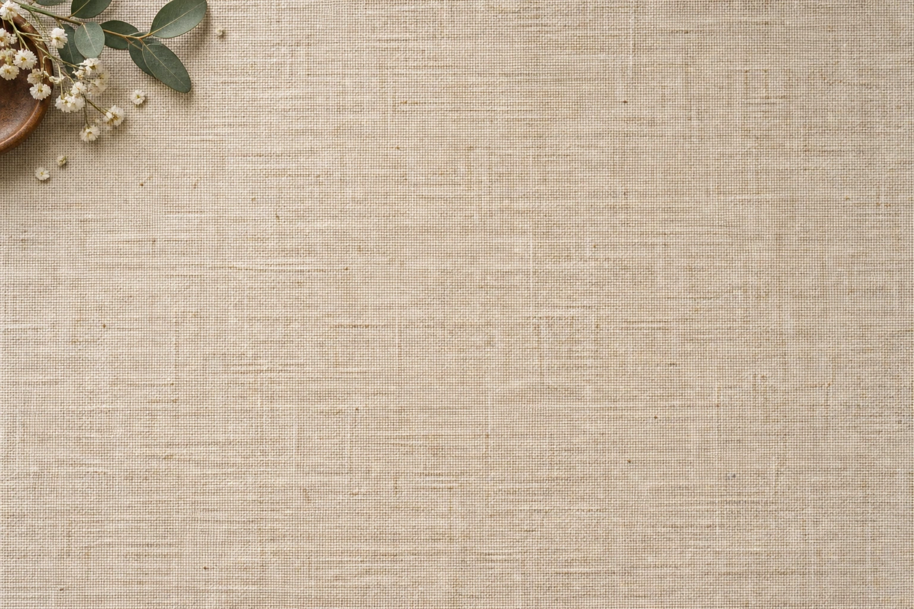
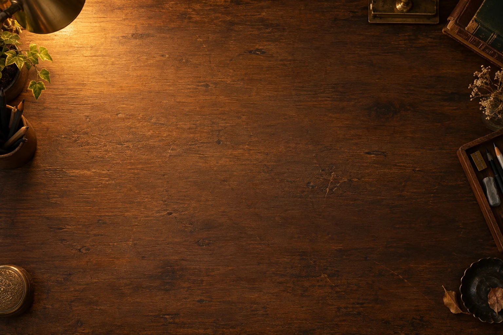
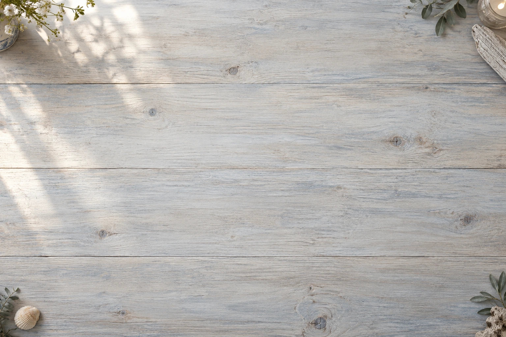

01PORTRAIT
오래 보고 싶은 얼굴 ↗
한 장의 사진에 담긴 표정을
연필 선의 따뜻함으로.
A PHOTO. A PENCIL. YOUR HEART.
좋아하는 얼굴, 오래 간직하고 싶은 순간.
사진 한 장을 천천히 그려지는 연필 영상으로 만들어 보세요.

SMALL MOMENTS, LASTING MEMORIES
앨범 속에 머물던 한 장의 사진에
연필의 움직임과 전하고 싶은 말을 더합니다.
그리는 시간까지 하나의 추억이 되도록.

01 / THE PROCESSDRAWING, ONE STROKE AT A TIME
얼굴의 윤곽부터 작은 음영까지.
속도를 달리하는 연필과 부드러운 사각거림이
그려지는 순간을 채웁니다.
MAKE IT PERSONAL
응원하는 마음도, 고마운 마음도.
나만의 문장과 분위기로 남겨 보세요.

01PORTRAIT
한 장의 사진에 담긴 표정을
연필 선의 따뜻함으로.

02LETTER
그림 위에 한 줄, 또 한 줄.
마지막에는 나의 서명을 더해요.

03COLLECTION
사진 여러 장을 하나의 영상으로.
완성한 그림은 사진으로도 간직해요.
이 페이지의 화실·작품 사진 5장은 분위기를 소개하기 위해 만든 AI 연출 이미지입니다. 실제 스케치 결과는 입력 사진과 설정에 따라 달라집니다.
SET THE MOOD
따뜻한 원목부터 차분한 리넨까지.
10가지 배경으로 당신의 그림에 분위기를 더하세요.




FROM PHOTO TO FILM
복잡한 편집 없이 세 단계로.
마음에 들 때까지 미리 보고 완성하세요.
얼굴이 선명한 사진을 선택하세요.
목록을 정리한 뒤 만들기를 눌러요.
공통 제목·서명과 사진별 편지를 넣고
배경과 가로·세로 화면을 골라요.
미리보기로 확인한 다음
영상 또는 완성 사진으로 저장해요.
네. 작업실의 설정에서 가로 1920×1080 또는 세로 1080×1920을 선택할 수 있습니다. 여러 사진을 넣으면 정한 순서대로 하나의 영상으로 이어집니다.
사진 한 장당 10초부터 600초까지 정할 수 있습니다. 긴 편지를 쓸 때는 시간을 넉넉히 설정해 주세요. 사진 수와 한 장당 시간을 곱한 총 길이가 표시됩니다.
네. ‘완성 사진 다운로드 (PNG)’를 누르면 각 사진의 완성 장면이 별도 PNG 파일로 저장됩니다. 영상 저장 버튼은 사진 목록 전체를 이어서 저장합니다.
네. 새 작업실에서 사진을 추가하거나 삭제하고, 구도와 그림 스타일을 바꿀 수 있습니다. 분석과 그리기 진행 상태가 화면에 표시됩니다.
YOUR NEXT MEMORY STARTS HERE
당신의 마음을 담을 작은 화실이 준비되어 있어요.
내 사진으로 작품 만들기 ↗